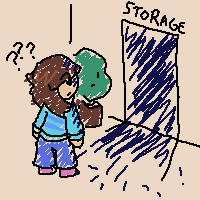
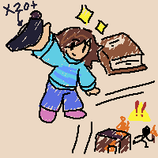
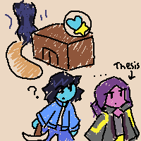
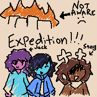
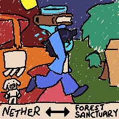

???
#1 - A world inside a closet?!

On a cold night, I woke up outside of a church, my head a bit dizzy. The last thing I could remember was that something hit me hard.
To be honest, I wasn't paying much mind about what happened afterwards, but I managed to make myself some basic tools before I went into that "church".
And inside the church, I first found a spark that interested me. It felt warm, so I touched it. Immediately I felt a lot... better than previously. I suppose that's some kind of empowerment... And then I found the closet.
The closet was dark inside. As if it was actively absorbing whatever light coming out of it.
At first, I was a bit shocked at this. But then, I decided I should have a look. I was conflicted, but eventually, I walked into the closet.
...Aaand I fainted again. When I woke up again, I saw myself in another world, sustained by some sort of "Dark Fountain" they called. There's a town, a lot of people, stuff.
I was stunned for a moment. Like, you know, this isn't scientific! But it just happened.
Some of the people showed me around here. I think I remember some of them by name, Ekko? Stag? ...Mhh. Just, people there are just veeery nice. And in little time, I familiarized myself with this... little world inside a closet.
And then, I figured out I can also leave there freely.
...So, now I can be in 2 worlds?
Still sounds bizarre.
...Also, I'm a bit baffled about how I look completely blue in this... closet world.
#2 - Ink sac hunt & the arsonist

I wandered between two worlds. At first, I felt weird doing so. But then, in the closet world - let's call it the "Dark World", as its sky's just dark all the time - I saw that the library there (Yes! An entire library there) was on ink shortage. The librarian told me about it, and seeing that I'm a human (How am I not?) they requested me on it. And so I did.
Actually, getting a few squids was easy. Just, it's hard to find them on the night. I was a rookie, okay? But I did manage to get a few ink sacs from the squids. Upon delivering some back, the librarian gifted me a spellbook! In which it recorded the way of summoning a magical beam. I was a fast learner, I'd think - it only took me like half a minute to get a gist of it. From then on I can beam just like Ekko does!
And while I do my things in the Dark World, another thing happened. Somebody who we don't know committed arson! Ekko's shop got a bit burnt, and then most of the people there knew. I was one of them. On further investigation, we found that there was a tunnel underground! Yikes, of course arsonist needs stealth. Crossing the tunnel, we found another persons house... which also seemed to be burnt. I saw that house earlier while I was out of the town - well, Forest Sanctuary, but I thought it was just unused.
...And then, from others I knew that the library also suffered that once.
...Oh great. We need to stay on alert.
(Nice thing Ekko's worked on a trap.)
#3 - Settled down, stuff & Librarian's "big plan"

After some time, I've gotten a bit along with the folks in the Forest Sanctuary and started having the thought of settling down there! Well, I'm aware of the risk. Y'know, arsonist stuff.
I was thinking of building a stone house first, but later decided - well eff it. I'll still build a wooden house. While I was working on it, the librarian - um, I think they're called Thesis? - came to see how I was doing, and reminded me of cleaning up things after I logged quite a few trees down. I eventually finished! And I didn't forget about giving myself a big, fire-proof basement.
Besides that, Ekko took me on a trip around the Sanctuary. To be precise, the environment around it. We found two topaz clusters, discussed about things, and he taught me how I should handle creepers. When they come close, they blow up. When they blow up, they might not harm you, but they will hurt the terrains and buildings near them. As a result, you'll find yourself in a hole, or see your building become broken. And I've found myself a crossbow! And a few arrows from the skeletons. Should be enough to handle these green explosive bums.
Afterwards, the librarian Thesis also invited me on a trip. This time we went down the caves, slapped a few zombies skeletons and creepers aside, and found a "shrine." It's hot there! Black skeletons with stone swords and hot, hot lava were all over the place! As it might look dangerous, we still managed to clear out the threats there. And then... um... Thesis starts digging obsidian? More specifically "Crying Obsidian", a.k.a. those obsidians with some light purple textures that look like tiny rivers on them. By then they started talking about their plan. To stop the arsonist. By using those "crying obsidian" to form something. Might be powerful. I helped along the way. And after a bit of mining, we returned to the Sanctuary. Thesis waved goodbye, and went to the B1 of the library to do whatever they needed to do.
Guess I'll also go do my own things. It's been a busy day.
#4 - New person, group adventure & arson victim

Just a normal day for me, dealing with stuff in both the Dark World and the normal world.
But then, when I was going back to my settlement in the Dark World carrying a whole bunch of ores for smelting, I saw a new face.
His name's Xela, and he seemed curious about this Dark World. We quickly got along, and he seems willing to help people - when he saw that there was an ink sac shortage, he immediately asked me where to find it. We returned to the normal world, went to the seaside, and caught up another bunch of squids. He also fished a few salmon the hardcore way.
And then, there was another, called Jack. He at first seemed rather unresponsive, but then after the inconvenient period he managed to snap out of it. I gave him some help, like - hmm... A magical diamond hoe that should help him self-defend, some potions from a dungeon I screwed over that actually taste healthy (I think?) and, yeah, some bread. (Chinese has an old saying. “”.) We talked about stuff, and cut down a few trees, mined some coal, stuff. Afterwards, that was Stag's business - basically, they gave him a history class on the worlds' history. War happened, human used up magic, stuff stuff stuff, none of which occurred back in my world. (Speaking of which... Esther. Aster. Riv. Yichen. Proti. Are you all... okay there?)
After some time, Stag wanted to go on an adventure and both Jack and me agreed. We eventually arrived at a castle, and had a rest there. When we needed to return, Stag taught Jack to use his soul as his guide... which is exactly the method I'd learnt myself. By that time, I saw his. ...It was purple, very different from my cyan. And as for Stag's... it seemed to be white and upside-down.
We returned to the normal world - or, from the information I've heard, we should call it the "Light World" now, and not much longer after we got to the Dark World again.
...Aaand things went wrong. Alex's house was burnt! The arsonist had cast their very doom upon us again! (No, this isn't magic.) We helped repairing her house, and you know what? Her basement was totally intact! Not even a scratch! - well, fine, maybe stairs were a bit burnt, but still.
...So much happened, really. ...Maybe the arsonist's next target is my house. I need to think of a countermeasure.
#5 - Another Dark World, our Darkners & my faint

I don't know how, and I don't know why. When I was just walking down the path of the Forest Sanctuary, I suddenly felt shaken. It felt as if something big happened in the Light World... So I quickly left the Sanctuary and got back in the church, and... saw an office door open. It was just like the storage cabinet. All light cannot escape. Feeling curious, I stepped in. Again.
I was all prepared and didn't pass out like the last "first time". It was hot. Very hot. Even hotter than that "shrine". Lava and magma are everywhere. That aside, pig-like creatures, humanoid (they looked at me in awe sometimes, but I felt like they were just staring at my golden boots), zombified (...then why don't they start chasing me for my brain already) or beast-kin (these things were veeery violent!!), also filled the place. While walking around, I found a lot of quartz, gold and glowing stone powder along the way. ...I stuffed most of them into my backpack. Seriously, 300-something is a lot to carry.
Then, after I'd explored there for quite a bit of time, I returned to the Sanctuary. There, I knew about how some of the people here, like Alex - oh god i thought he was a girl - and Ekko, can turn into inanimate objects and be carried around by other people. Those who can turn into objects can only stay as objects in the Light World, and we call them Darkners. As for those who can move freely between the Light World and Dark Worlds without turning into an object, are called Lightners. ...Apparently, I'm a Lightner. And with this, I had carried with myself... a pick-up task and a transportation task.
For the pick-up task, I needed to get somebody called Geist from that hot hot place - I'd opt to calling it "The Nether Dark World" - back to the Sanctuary. It wasn't a hard process, and I discovered that Geist takes place as a book in the Light World. The transportation task, however... Well. I carried Ekko as a weird compass from the Sanctuary to the Nether DW, aaand pretty much had to wait for a long time till he'd done his things. And you know what? Ghasts. I wasn't scared of them, but NOW I do. They knocked me into a painful, burning unconsciousness with a single fireball, and when I woke up I found myself right by the white spark located in the Sanctuary. I actually warped back to the Sanctuary. ...Guess the white spark works as sone sort of a "savepoint" (this is a bold assumption I know), and that I might have died. Good thing though, Ekko did the revenge for me.
When I got back to the Sanctuary with Ekko, I saw a new face. But, really, I wasn't interested. I just wanted to get back to my settlement and sleep in, hoping I'll forget about it and my mental health will regenerate to max tomorrow.
alright, azamuku. or whoever who does this.
you think this is funny? no.
first, things are becoming increasingly dire even without your presence.
second, we've lost an amount of resources just because you want to play your little arson game with us.
i don't really get it. why? why would you think it a good idea to attack us?
i do NOT understand.
i know you're invisible. i know i might not be the one who actually finds you.
but you're really getting people pissed.
* It seems Azamuku has angered a peaceful soul...
#6 - Burning fire, helpless ire
I couldn't remain calm anymore the moment I'd see it.
Someone invisible flamed my settlement in front of me.
I mean, I accidentally blew up my settlement with a bed, I only got little work to do about the fire, and I need to rebuild the wooden part anyway. I wasn't mad at that.
But then, I saw Alex's house. The library. Our livestock.
Things have gone beyond the point of tolerability. Let me report our loss here.
My settlement: minor burns from the flames. I reacted quickly and it was broken anyway.
Alex's home: burnt down. Crucial furnitures and tools weren't ruined, but the house was 2/3 gone.
The library: Large holes appeared on the floor of 1F and 2F. A large quantity of books were ruined and gone. Three enchanted axes (2 diamond, 1 iron)? Lost. (We managed to find them in another chest, but still.)
Our livestock: Greatly harmed. We used to have like 5 cows, 4 sheep, and overloading chickens. Now we only have 4 cows, 2 chickens, and not enough sheep to make more sheep. It's not possible to transport a sheep into a Dark World, and finding a sheep in the Dark World is, albeit possible, a very difficult task.
Our zombie villagers: 0/4 remaining. Gone. All those villagers-to-be once we find the cure, now nothing but piles of rotten flesh.
Jack, Will and I helped rebuilding Alex's home. Stag helped fixing the library. Eventually, everything was almost back to normal. I know the change waas reversible, but the point wasn't that.
The arsonist, apparently named Azamuku, left a letter in the burnt library to Geist. I read it through. The arson was "of no ill intent"? It was a "trial for the Lightners"?? TRIAL MY ASS!! Furiously I left two extra pages on that letter. I need a vent, really.
Today is a horrible day. Not to mention my mental capability isn't good. I want to have some lone time.
#7 - Arsonist gone, time for adventures & fights
Good news! The arsonist is gone! I got this piece of information from Stag who'd ripped that "Arsonist Alert" notice off the bulletin board. (The board is a pretty reliable info source, although there's actually not much on it.)
The things happened afterwards I haven't too much of an idea. I might not be remembering everything down to the finest detail... I'm writing this two days after these things happened.
Let's talk about the one big stuff. Stag, Will, another person and I decided that we would try slaying a "Wither", which is a dark-gray big creature with three heads. We fought it in the Light World, and the fight... is nowhere easy. I fainted like 4 times. It hurt. But still, I had the perseverance to press on. In the end, I remembered I could just... sing a lullaby. ...It was super effective. Stag and I comboed it to death, taking like tens of minutes. It didn't wake up in the process. This is just ridiculous.
And then, we (Well, it's Stag, Will, and me) went to the Nether DW in search of treasure. It took a long time, but my yield was tremendous. One netherite ingot. One diamond pickaxe that seemed to dig things fast. A lot of iron ingots that solved my iron shortage problem. I attempted to harden my iron pickaxe with that diamond one. No wonder I failed. (No tools were harmed in the process.)
Then there came the school stuff. Stag and another person I didn't (and still don't) know their name planned on building a school in the Light World, just a hundred meters behind the Church. I helped them with clay & stone brick shortage by throwing just every clay ball I'd dug up into their furnace and bringing my hoarded cobblestone. ...You might find it ridiculous if I said I stuffed around 250 clay balls at once into 4 furnaces each.
There might be more of the things I'd experienced, but my memory isn't quite good. Don't worry, I'm still living, and we're still living.
#7.5 - I'm quite bored, actually
Mhhh... it's been a long time, huh?
Recently, nothing inyeresting happened. I've been wandering around in the Sanctuary and the Light World.
To be frank, the Light World has a lot of nice scenery! However, without lively people out there, things quickly get dull. Sooo... yeah. It's been boring out there.
So far, I've been working on surviving better, like training myself for stuff like scavenging, resource using, waste upcycling and stuff. I hope that once people come out of their homes again my things will help!
don't quite know how to end an entry... so... um.
Peace out???
Oh god this is so embarrasing